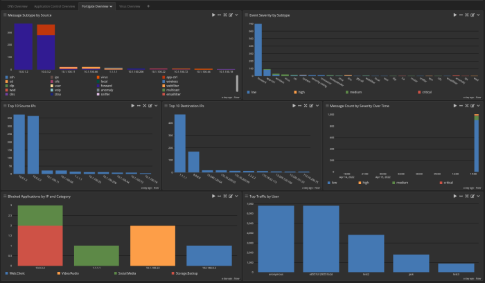
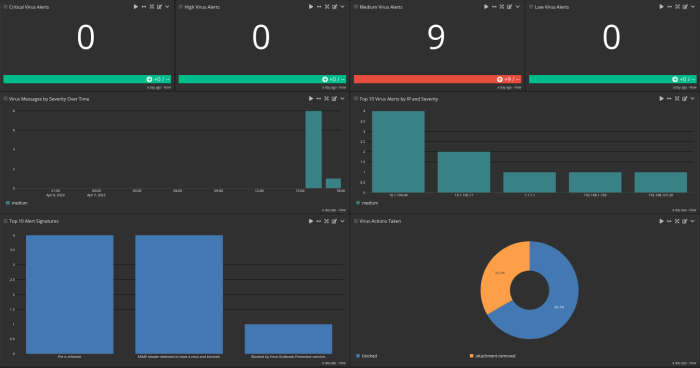
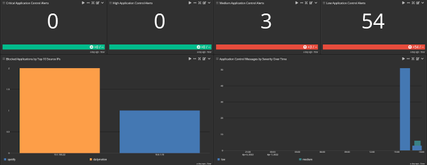
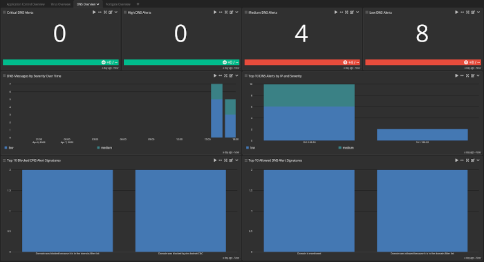

Hint: If this stream does not exist prior to the activation of this pack then it will be created and configured to route messages to this stream and the associated index set. There should not be any stream rules configured for this stream.
Fortinet's FortiGate is a next-generation firewall that covers both traditional and wireless traffic. The hardware-based firewall can function as an IPS and include SSL inspection and web filtering. This technology pack will process Fortigate event log messages, providing normalization and enrichment of common events of interest.
This technology pack includes one stream:
Hint: If this stream does not exist prior to the activation of this pack then it will be created and configured to route messages to this stream and the associated index set. There should not be any stream rules configured for this stream.
This technology pack includes one index set definition:
Hint: If this index set is already defined, then nothing will be changed. If this index set does not exist, then it will be created with retention settings of a daily rotation and 90 days of retention. These settings can be adjusted as required after installation.
date=2021-06-22 time=14:32:46 devname="ABCD-EFG-HIK-LMN-202-87-35-206" devid="FGA20E5Q16027714" logid="0000000013" type="traffic" subtype="forward" level="notice" vd="root" eventtime=1624352568074022779 tz="+0530" srcip=x.x.x.x srcport=50198 srcintf="wan1" srcintfrole="wan" dstip=2.2.2.2 dstport=4510 dstintf="wan2" dstintfrole="wan" sessionid=2912907682 proto=6 action="close" policyid=32 policytype="policy" poluuid="5b3cd3ef-0fd0-51e7-1222-9c9e72bdfbba" service="4510" dstcountry="India" srccountry="India" trandisp="dnat" tranip=1.1.1.1 tranport=4510 duration=62 sentbyte=2049 rcvdbyte=2703 sentpkt=12 rcvdpkt=11 appcat="unscanned"
The Illuminate processing of Fortigate log messages provides the following:
| Fortigate Log Subtype | GIM Category | GIM Subcategory |
|---|---|---|
| Forward | network | network.default |
| Multicast | network | network.default |
| Sniffer | network | network.default |
| Webfilter | network | network.default |
| Virus | alert | alert.default |
| Anomaly | alert | alert.default |
| Local | network | network.default |
| SSL | network | network.default |
The Fortigate Spotlight content pack contains:
Dashboard: Fortigate Overview
-Fortigate Overview tab: Fortigate Overview

- Fortigate Overview tab: Virus Overview

- Fortigate Overview tab: Application Control Overview

- Fortigate Overview tab: DNS Overview
